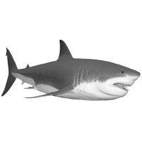
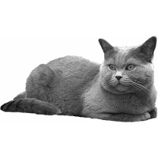
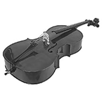
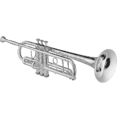
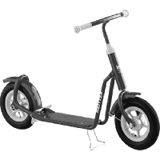

<!DOCTYPE html>
<html>
  <head>
    <title>My experiment</title>
    <script src="jspsych-6.0.5/jspsych.js"></script>
    <script src="jspsych-6.0.5/plugins/jspsych-html-keyboard-response.js"></script>
    <script src="jspsych-6.0.5/plugins/jspsych-image-keyboard-response.js"></script>
		<script src = "jspsych-6.0.5/plugins/jspsych-fullscreen.js"></script>
    <link rel="stylesheet" href="jspsych-6.0.5/css/jspsych.css"></link>
  </head>
  <body></body>
  <script>

	////////////////////////////////////////
	////////	  SUBJECT ID		////////
	////////////////////////////////////////

	  var subject_id = jsPsych.randomization.randomID(15);

	  jsPsych.data.addProperties({
	    subject: subject_id
	  });

		////////////////////////////////////////
		////////	CREATE TIMELINE		////////
		////////////////////////////////////////
    var timeline = [];

		timeline.push({
			type: 'fullscreen',
			fullscreen_mode: true
		});

    /* define welcome message trial */
    var welcome_block = {
      type: "html-keyboard-response",
      stimulus: "Welcome to the experiment. Press any key to begin."
    };
    timeline.push(welcome_block);

		////////////////////////////////////////
		////////	 PRACTICE PHASE		////////
		////////////////////////////////////////
    /* define instruction screen 1 */
    var instructions1 = {
      type: "html-keyboard-response",
      stimulus: "<p>In this experiment, an image will appear in the center " +
          "of the screen.</p><p>Depending on the image " +
					"you will have to pay attention to different things." +
          "<p>Press any key to read the next screen of the instructions.</p>",
    };
    timeline.push(instructions1);

		/* define instruction screen 2 */
		var instructions2 = {
			type: "html-keyboard-response",
			stimulus: "<p> First, when the image contains an animal:</p>" +
					"<p>press the letter D if it is a <strong>water animal</strong>.</p>" +
					"<p>press the letter K if it is a <strong>land animal</strong>.</p>" +
					"<p>Always try to answer correctly as fast as possible.</p>" +

					"<div style='float: left;'></img>" +
					"<p class='small'><strong>Press the D key</strong></p></div>" +
					"<div class='float: right;'></img>" +
					"<p class='small'><strong>Press the K key</strong></p></div>" +

					"<p>Press any key to read the next screen of the instructions.</p>",
		};
		timeline.push(instructions2);

		/* define instruction screen 3 */
		var instructions3 = {
			type: "html-keyboard-response",
			stimulus: "<p> Second, when the image contains an instrument:</p>" +
					"<p>press the letter D if it is a <strong>string instrument</strong>.</p>" +
					"<p>press the letter K if it is a <strong>wind instrument</strong>.</p>" +
					"<p>Always try to answer correctly as fast as possible.</p>" +

					"<div style='float: left;'></img>" +
					"<p class='small'><strong>Press the D key</strong></p></div>" +
					"<div class='float: right;'></img>" +
					"<p class='small'><strong>Press the K key</strong></p></div>" +

					"<p>Press any key to read the next screen of the instructions.</p>",

		};
		timeline.push(instructions3);

		/* define instruction screen 3 */
		var instructions4 = {
			type: "html-keyboard-response",
			stimulus: "<p> Last, when the image contains a vehicle:</p>" +
					"<p>press the letter D if it has <strong>2 wheels</strong>.</p>" +
					"<p>press the letter K if it has <strong>4 wheels</strong>.</p>" +
					"<p>Always try to answer correctly as fast as possible.</p>" +

					"<div style='float: left;'></img>" +
					"<p class='small'><strong>Press the D key</strong></p></div>" +
					"<div class='float: right;'></img>" +
					"<p class='small'><strong>Press the K key</strong></p></div>" +

					"<p>Press any key to read the next screen of the instructions.</p>",
			post_trial_gap: 2000
		};
		timeline.push(instructions4);

		/* trial types */

		var practice_trial_types = [
			{stimulus: "stim/s_water1.png", data: {test_part: "practice", con: "task1", correct_response: "d"}},
			{stimulus: "stim/s_water2.png", data: {test_part: "practice", con: "task1", correct_response: "d"}},
			{stimulus: "stim/s_land1.png", data: {test_part: "practice", con: "task1", correct_response: "k"}},
			{stimulus: "stim/s_land2.png", data: {test_part: "practice", con: "task1", correct_response: "k"}},

			{stimulus: "stim/s_string1.png", data: {test_part: "practice", con: "task2", correct_response: "d"}},
			{stimulus: "stim/s_string2.png", data: {test_part: "practice", con: "task2", correct_response: "d"}},
			{stimulus: "stim/s_wind1.png", data: {test_part: "practice", con: "task2", correct_response: "k"}},
			{stimulus: "stim/s_wind2.png", data: {test_part: "practice", con: "task2", correct_response: "k"}},

			{stimulus: "stim/s_twowheel1.png", data: {test_part: "practice", con: "task3", correct_response: "d"}},
			{stimulus: "stim/s_twowheel2.png", data: {test_part: "practice", con: "task3", correct_response: "d"}},
			{stimulus: "stim/s_fourwheel1.png", data: {test_part: "practice", con: "task3", correct_response: "k"}},
			{stimulus: "stim/s_fourwheel2.png", data: {test_part: "practice", con: "task3", correct_response: "k"}},


		];


		var fixation = {
      type: 'html-keyboard-response',
      stimulus: '<div style="font-size:60px;">+</div>',
      choices: jsPsych.NO_KEYS,
      trial_duration: 500,

      data: {test_part: 'fixation'}
    }

		/* trial structure */


		var practice_trial = {
			type: "image-keyboard-response",
			stimulus: jsPsych.timelineVariable("stimulus"),
			choices: ['d', 'k'],
			trial_duration: 200000,
			post_trial_gap: 0,
			data: jsPsych.timelineVariable("data"),
			on_finish: function(data){
				data.correct = data.key_press == jsPsych.pluginAPI.convertKeyCharacterToKeyCode(data.correct_response);
			}
		};

		var practice_feedback = {
			type: 'html-keyboard-response',
			stimulus: function() {
				var last_trial_correct = jsPsych.data.get().last(1).values()[0].correct;
				if(last_trial_correct){
					return '<div style="font-size:60px; color: green">CORRECT!</div>';
				}else{
					return '<div style="font-size:60px; color: red">WRONG!</div>';
				}
			},
			choices: jsPsych.NO_KEYS,
			trial_duration: 500,
			post_trial_gap: 500,
			data: {test_part: 'feedback'}
		};

		/* trial procedure */

		var practice_trial_procedure = {
			timeline: [fixation,practice_trial,practice_feedback],
			timeline_variables: practice_trial_types,
			repetitions: 1,
      randomize_order: true
			}

		timeline.push(practice_trial_procedure);

		////////////////////////////////////////////
		////////	 EXPERIMENTAL PHASE		////////
		////////////////////////////////////////////

			/* declare variables */

			var i;
			var nblocks = 2;

			var test_trial_types = [];
			var test_trial = [];
			var test_trial_procedure = [];
			var test_break = [];
			var test_goodbye = [];

			/* instructions */

			var test_instructions = {
				type: "html-keyboard-response",
				stimulus:"<p> Now the real experiment starts </p>" +
						 "<p><br> You will no longer get feedback </p></br>" +

						 "<p>Please, remember to always answer correctly as fast as possible</p>" +

						 "<p>Press any key to begin.</p>",
				post_trial_gap: 1000
			};

			timeline.push(test_instructions);

			/* run blocks */

			for(i = 0; i < nblocks; i++){

				/* trial types */
				var test_trial_types = [
					{stimulus: "stim/s_water1.png", data: {test_part: "test", con: "task1", correct_response: "d"}},
					{stimulus: "stim/s_water2.png", data: {test_part: "test", con: "task1", correct_response: "d"}},
					{stimulus: "stim/s_land1.png", data: {test_part: "test", con: "task1", correct_response: "k"}},
					{stimulus: "stim/s_land2.png", data: {test_part: "test", con: "task1", correct_response: "k"}},

					{stimulus: "stim/s_string1.png", data: {test_part: "test", con: "task2", correct_response: "d"}},
					{stimulus: "stim/s_string2.png", data: {test_part: "test", con: "task2", correct_response: "d"}},
					{stimulus: "stim/s_wind1.png", data: {test_part: "test", con: "task2", correct_response: "k"}},
					{stimulus: "stim/s_wind2.png", data: {test_part: "test", con: "task2", correct_response: "k"}},

					{stimulus: "stim/s_twowheel1.png", data: {test_part: "test", con: "task3", correct_response: "d"}},
					{stimulus: "stim/s_twowheel2.png", data: {test_part: "test", con: "task3", correct_response: "d"}},
					{stimulus: "stim/s_fourwheel1.png", data: {test_part: "test", con: "task3", correct_response: "k"}},
					{stimulus: "stim/s_fourwheel2.png", data: {test_part: "test", con: "task3", correct_response: "k"}},


				];

				/* trial structure */
				check_response = {
					type: "check-keyboard-response",
					stimulus: '',
					choices: ["d","k"],
					trial_duration: 50,
					post_trial_gap: 0,
					data: {test_part: 'check_response'}
				};

				var test_trial = {
					type: "image-keyboard-response",
					stimulus: jsPsych.timelineVariable("stimulus"),
					choices: ['d', 'k'],
					trial_duration: 1000,
					post_trial_gap: 0,
					data: jsPsych.timelineVariable("data"),
					on_finish: function(data){
						data.correct = data.key_press == jsPsych.pluginAPI.convertKeyCharacterToKeyCode(data.correct_response);
					}
				};

				var test_trial_procedure = {
					timeline: [fixation,test_trial],
					timeline_variables: test_trial_types,
					repetitions: 1,
		      randomize_order: true
					}

				timeline.push(test_trial_procedure);

				/* break and goodbye */

				if(i < (nblocks-1)){
					test_break = {
						type: "html-keyboard-response",
						stimulus:	"<p> You can now take a break. </p></br>" +
									"<p>Press any key to continue.</p>",
						post_trial_gap: 1000,
						data: {test_part: 'break'}
					};

					timeline.push(test_break);
				}else{
					test_goodbye = {
						type: "html-keyboard-response",
						stimulus:	"<p> The experiment is now finished. </p></br>" +
									"<p>Goodbye.</p>",
						data: {test_part: 'bye'}
					};

					timeline.push(test_goodbye);
				}
			} // close the loop
		////////////////////////////////////////////
		////////	 START EXPERIMENT		////////
		////////////////////////////////////////////

		jsPsych.init({
					timeline: timeline,
					on_finish: function() {
						// jsPsych.data.displayData();
						jsPsych.data.get().filter({test_part: 'test'}).localSave('csv','/data/'+subject_id+'.csv');
					}
				});

		// function saveData(name, data){
		// 	var xhr = new XMLHttpRequest();
		// 	xhr.open('POST', 'write_data.php'); // 'write_data.php' is the path to the php file described above.
		// 	xhr.setRequestHeader('Content-Type', 'application/json');
		// 	xhr.send(JSON.stringify({filename: name, filedata: data}));
		// }

		// jsPsych.init({
		// 	timeline: timeline,
		// 	on_interaction_data_update: function(data) {
		// 		console.log(JSON.stringify(data))
		// 	},
		// 	on_finish: function() {
		// 		//jsPsych.data.displayData();
		// 		//jsPsych.data.get().filter({test_part: 'test'}).localSave('csv',subject_id+'.csv');
		// 		saveData("ID_events_"+subject_id, jsPsych.data.getInteractionData().csv());
		// 		saveData("ID_"+subject_id, jsPsych.data.get().filter({test_part: 'test'}).csv());
		// 	}
		// });
  </script>
</html>
